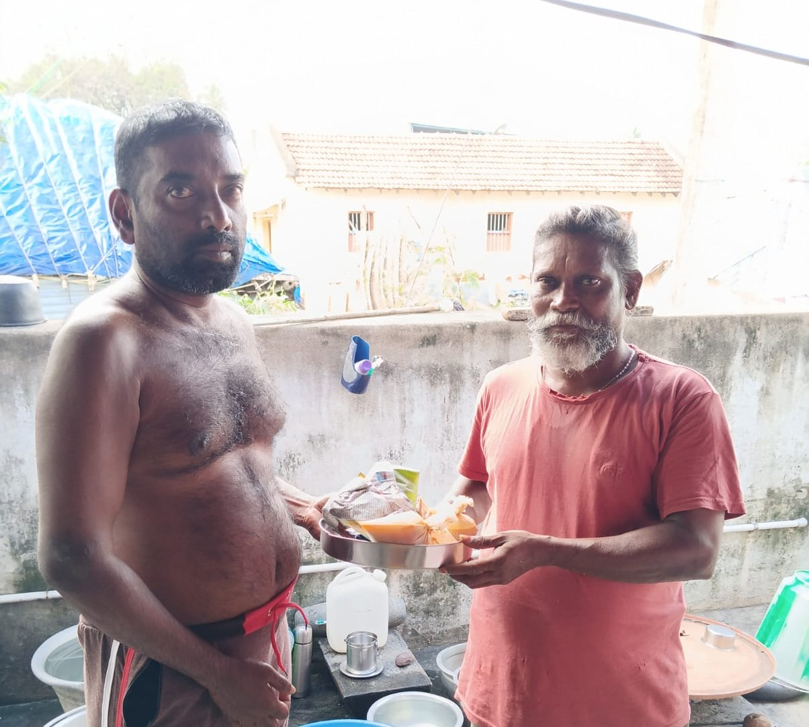
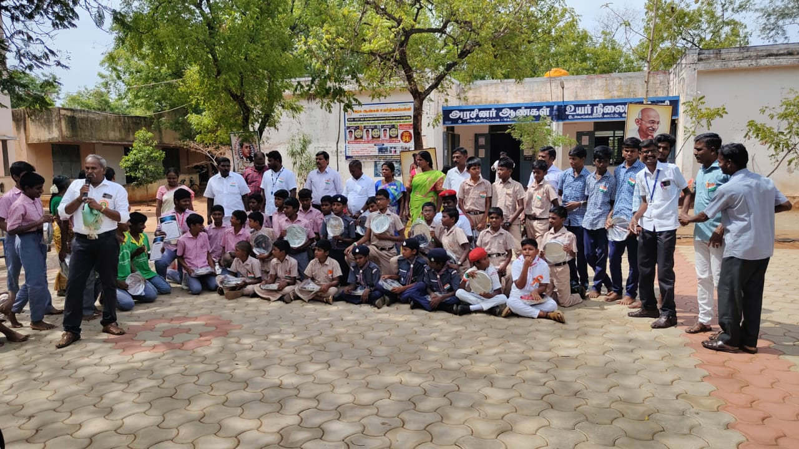
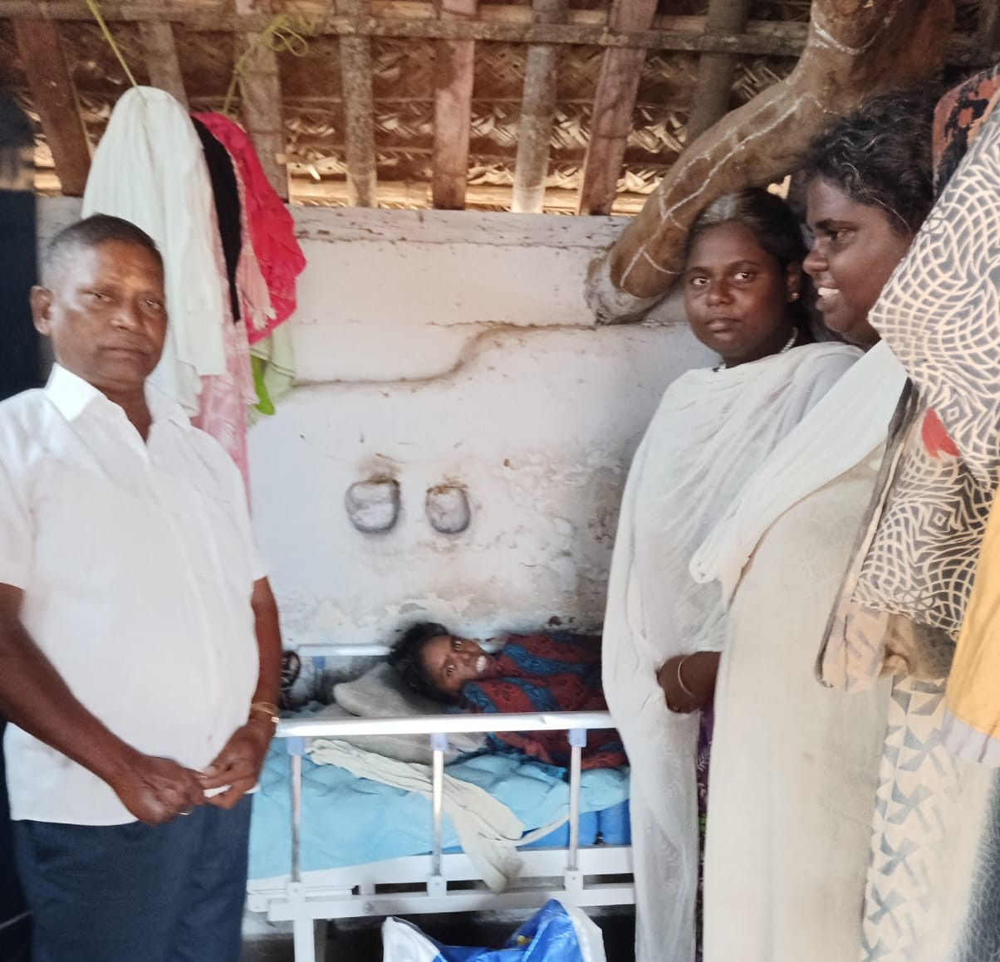
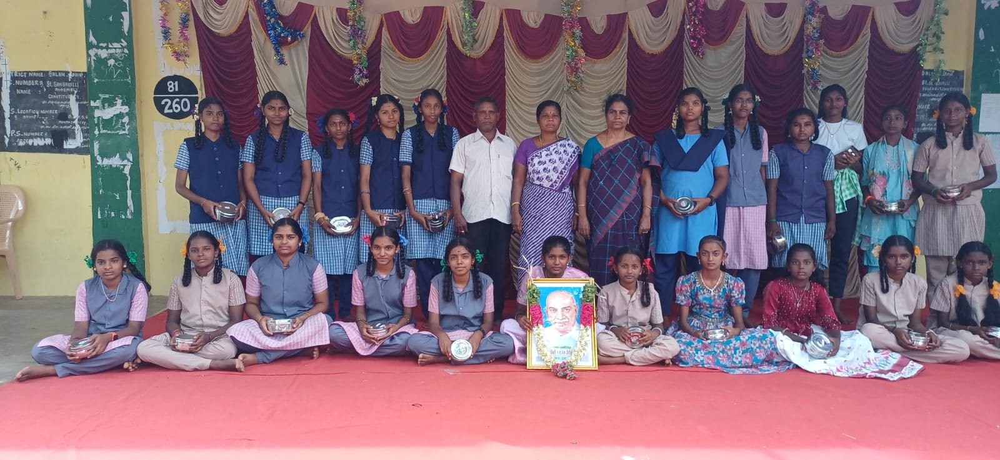

உணவு உதவி
உணவுத் தேவைகளைப் பூர்த்தி செய்வதில் சிரமங்களை எதிர்கொள்ளும் தனிநபர்கள் மற்றும் குடும்பங்களுக்கு அக்கறையுடனும் அன்புடனும் உதவுவதே எங்கள் நோக்கம்.

கல்வி உதவி
கல்வி சிறந்த எதிர்காலத்திற்கான வாய்ப்புகளை உருவாக்குகிறது என்று நம்புகிறோம். மாணவர்களை ஊக்குவிப்பதிலும், கல்வி வாய்ப்புகளை மேம்படுத்துவதிலும் நாங்கள் கவனம் செலுத்துகிறோம்.

முதியோர் பராமரிப்பு
முதியோரின் கண்ணியத்தையும் நலனையும் மதிக்கிறோம். நமது சமூகத்தில் உள்ள முதியவர்களுக்கு அன்பு, மரியாதை மற்றும் அக்கறையுடன் கூடிய ஆதரவை வழங்க அனைவரையும் ஊக்குவிக்கிறோம்.

சமூக நலப் பணிகள்
தேவையுள்ள மக்களுக்கு உதவுவதையும், சமூக ஆதரவு, ஒத்துழைப்பு மற்றும் நலப் பணிகள் மூலம் நேர்மறையான மாற்றத்தை உருவாக்குவதையும் நோக்கமாகக் கொண்டுள்ளோம்.
